KalpX Checkpoint — Web Mobile vs RN
Left: web (kalpx-frontend Playwright @ 390×844). Right: React Native (Pixel 7 emulator @ 1080×2400). Personas seeded via seed_test_journey --engagement {high|medium|low|near_zero|mastered} with real JourneyActivity rows so checkpoint metrics reflect actual engagement.
CHECKPOINT · Day 7 · Intro
WEB MOBILE · 390×844
CP7.E.01.png
RN · emulator 1080×2400
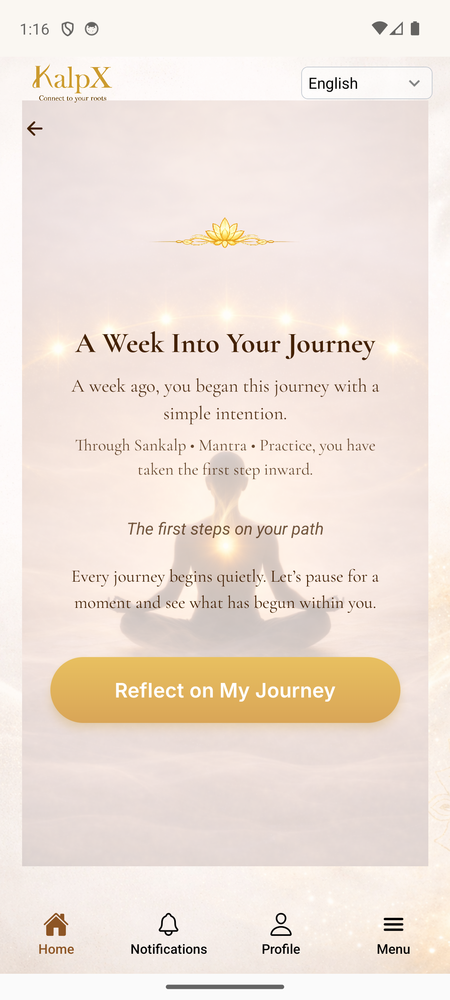
02_intro_loaded_20260410_131616.png
CHECKPOINT · Day 7 · Journey Grid
WEB MOBILE · 390×844
CP7.E.02.png
RN · emulator 1080×2400
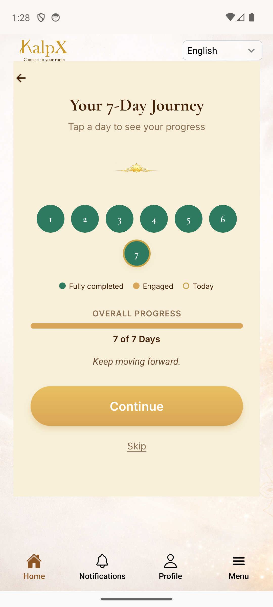
03_grid_real_20260410_132815.png
CHECKPOINT · Day 7 · Continuity Mirror
WEB MOBILE · 390×844
CP7.E.03.png
RN · emulator 1080×2400
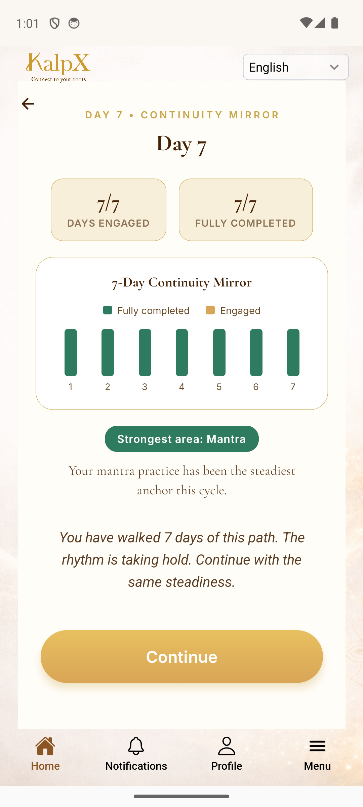
03_mirror_20260410_130149.png
CHECKPOINT · Day 7 · Your path continues
WEB MOBILE · 390×844
CP7.E.06.png
RN · emulator 1080×2400
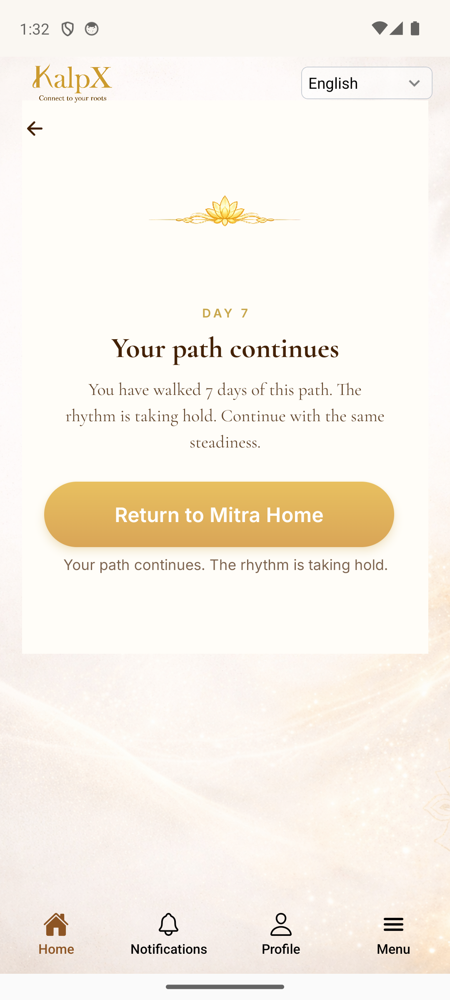
04_mirror_correct_20260410_133236.png
CHECKPOINT · Day 7 · Medium · Mirror
WEB MOBILE · 390×844
CP7.L.03.png
RN · emulator 1080×2400
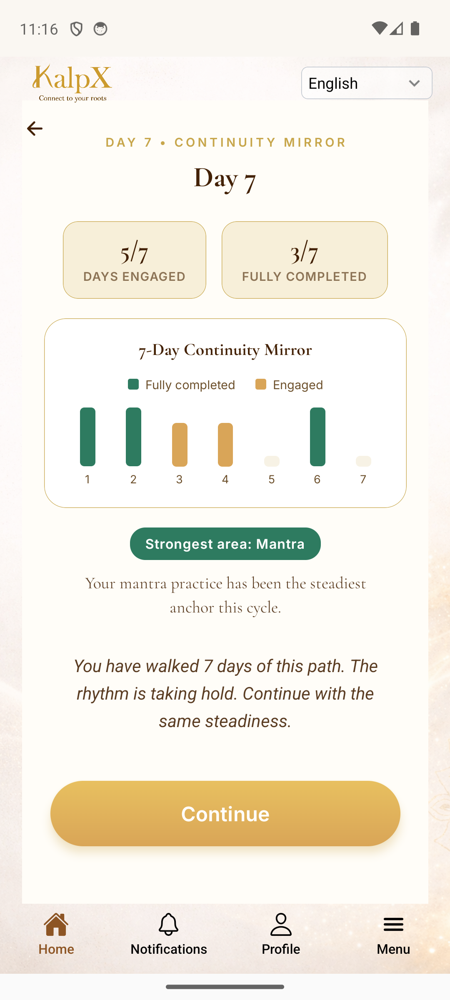
03_mirror_20260410_111712.png
CHECKPOINT · Day 7 · Low · Mirror
WEB MOBILE · 390×844
CP7.L.03.png
RN · emulator 1080×2400
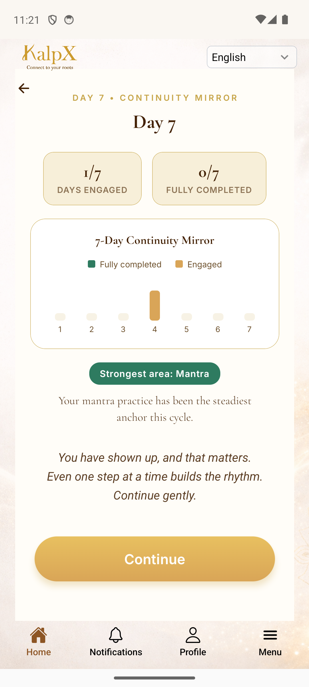
03_mirror_20260410_112208.png
CHECKPOINT · Day 7 · Lightened
WEB MOBILE · 390×844
CP7.N.03.png
RN · emulator 1080×2400
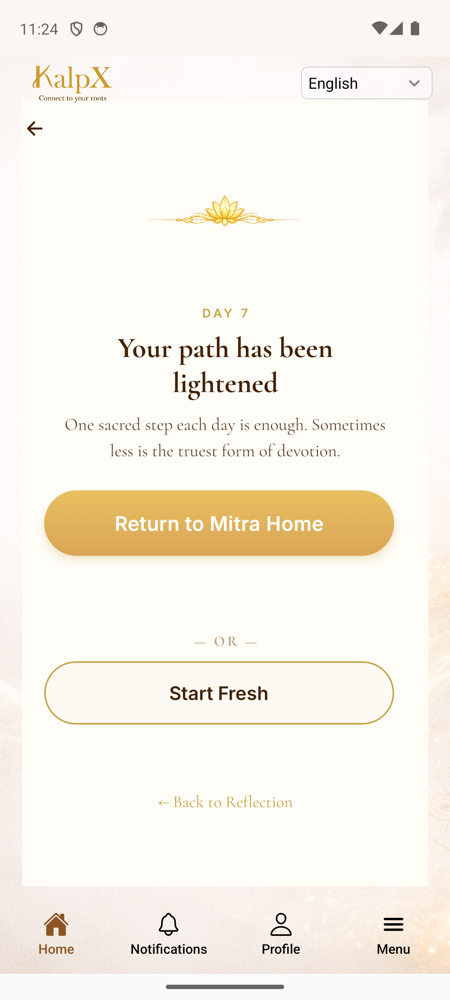
04_decision_20260410_112446.png
CHECKPOINT · Day 14 · Intro
WEB MOBILE · 390×844
CP14.E.01.png
RN · emulator 1080×2400
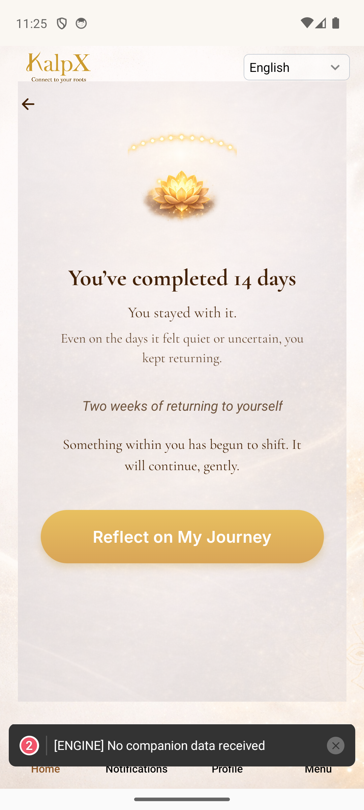
02_intro_20260410_112557.png
CHECKPOINT · Day 14 · Evolution Pivot
WEB MOBILE · 390×844
CP14.E.03.png
RN · emulator 1080×2400
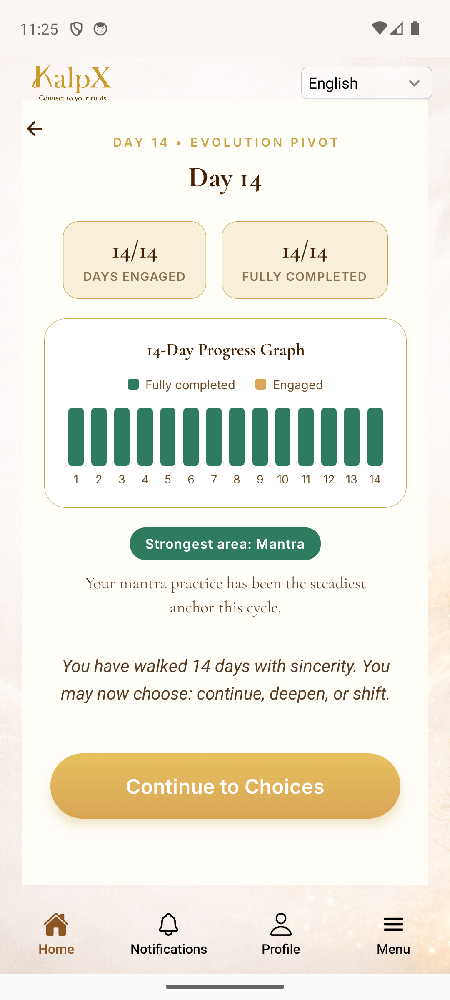
03_mirror_20260410_112616.png
CHECKPOINT · Day 14 · Choose Next Step
WEB MOBILE · 390×844
CP14.E.06.png
RN · emulator 1080×2400
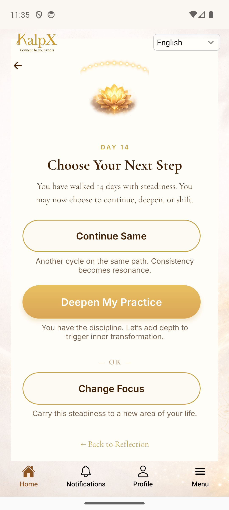
06_decision_screen_20260410_113541.png
CHECKPOINT · Day 14 · Medium · Mirror
WEB MOBILE · 390×844
CP14.L.03.png
RN · emulator 1080×2400
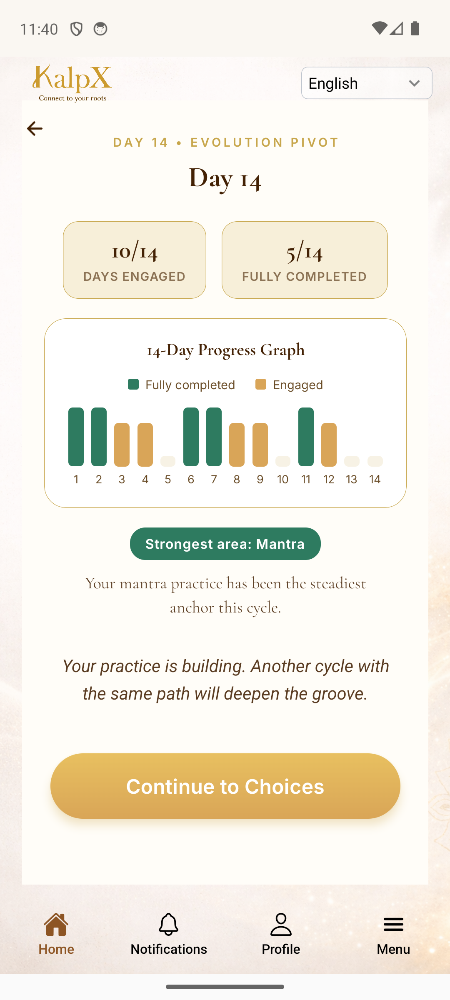
03_mirror_20260410_114013.png
CHECKPOINT · Day 14 · Low · Mirror
WEB MOBILE · 390×844
CP14.L.03.png
RN · emulator 1080×2400
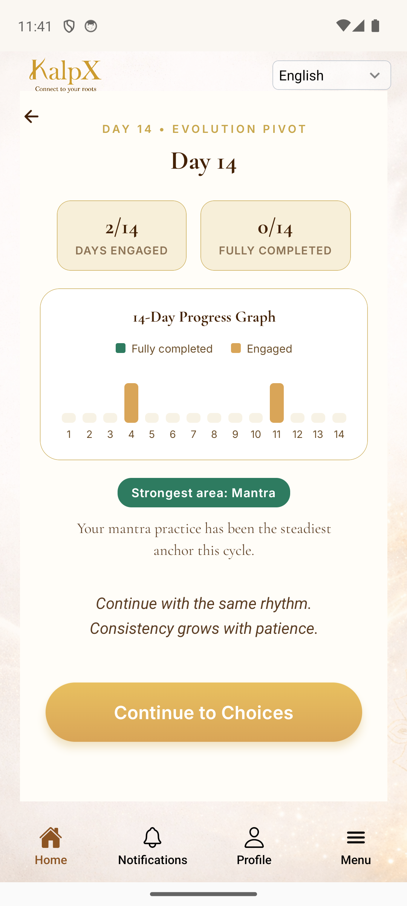
03_mirror_20260410_114123.png
WELCOME BACK
WEB MOBILE · 390×844
WB.01.png
RN · emulator 1080×2400
01_home_20260410_114328.png
CORE · Day active dashboard
WEB MOBILE · 390×844
RUN.INFO.01.png
RN · emulator 1080×2400
02_day_active_20260410_145333.png
CORE · Mantra · Info reveal
WEB MOBILE · 390×844
RUN.INFO.01.png
RN · emulator 1080×2400
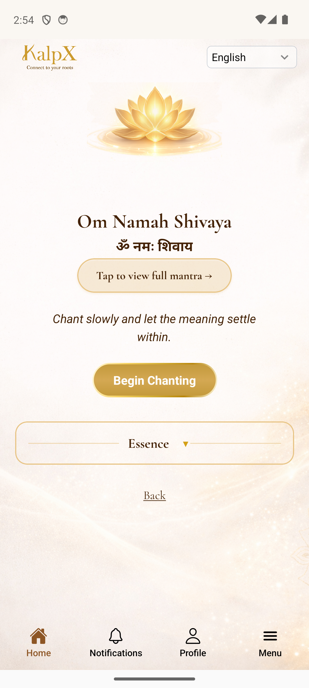
03_info_reveal_mantra_20260410_145403.png
CORE · Mantra · Rep selection
WEB MOBILE · 390×844
RUN.M.01.png
RN · emulator 1080×2400
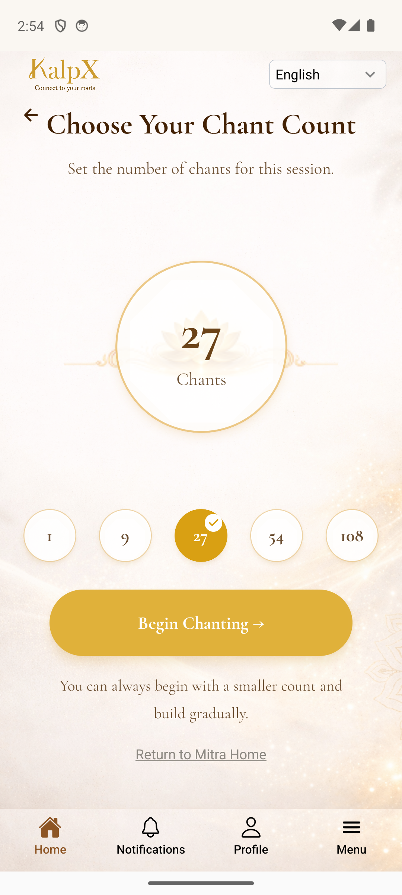
04_rep_selection_20260410_145420.png
CORE · Mantra · Prep (Be still)
WEB MOBILE · 390×844
RUN.M.02.png
RN · emulator 1080×2400
05_mantra_prep_or_runner_20260410_145506.png
CORE · Mantra · Runner (bead counter)
WEB MOBILE · 390×844
RUN.M.03.png
RN · emulator 1080×2400
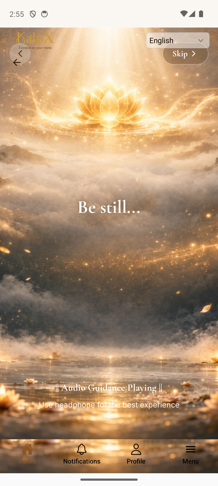
06_mantra_runner_20260410_145512.png
CORE · Sankalp · Info reveal
WEB MOBILE · 390×844
RUN.S.01.png
RN · emulator 1080×2400
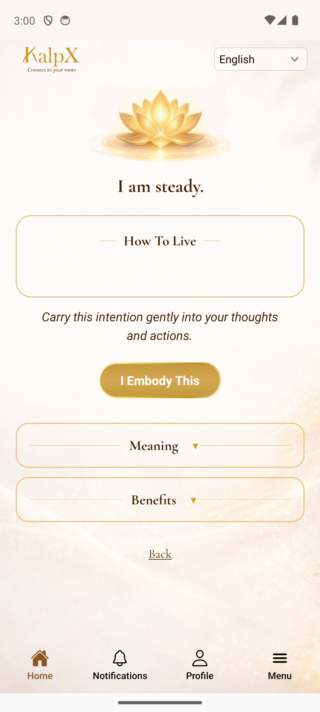
02_info_reveal_sankalp_20260410_150003.png
CORE · Sankalp · Embody
WEB MOBILE · 390×844
RUN.S.02.png
RN · emulator 1080×2400
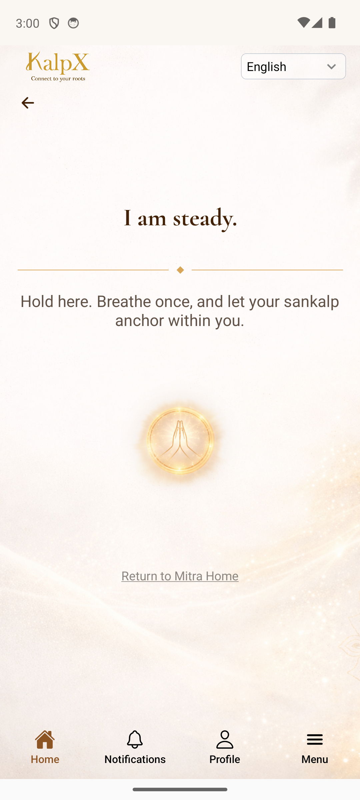
03_sankalp_embody_20260410_150019.png
CORE · Practice · Info reveal
WEB MOBILE · 390×844
RUN.P.01.png
RN · emulator 1080×2400
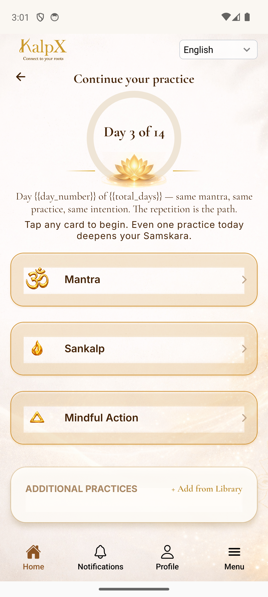
02_info_reveal_practice_20260410_150122.png
CORE · Practice · Runner
WEB MOBILE · 390×844
RUN.P.02.png
RN · emulator 1080×2400
RN capture missing
ADDITIONAL · Items section on dashboard
WEB MOBILE · 390×844
RUN.A.M.01.png
RN · emulator 1080×2400
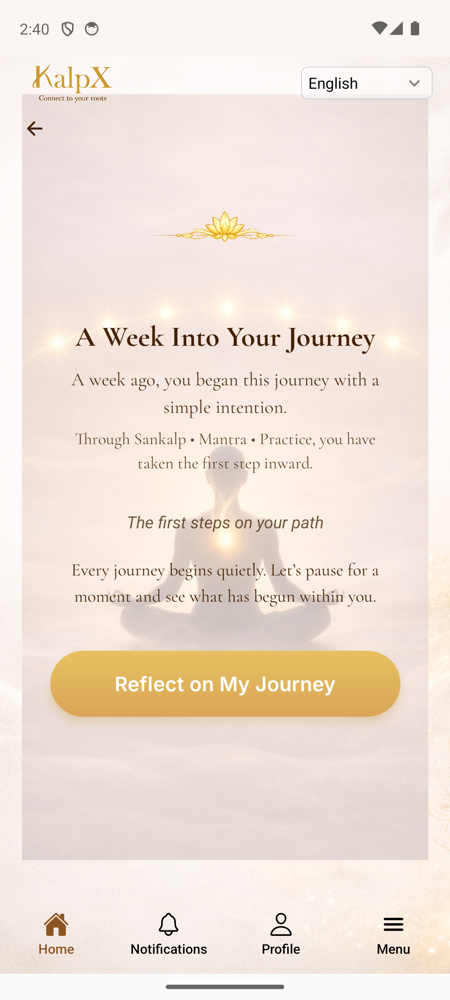
02_additional_section_20260410_144009.png
ADDITIONAL · Library search
WEB MOBILE · 390×844
RUN.A.M.02.png
RN · emulator 1080×2400
RN capture missing
CHECK-IN · Prana selection
WEB MOBILE · 390×844
RUN.SUP.01.png
RN · emulator 1080×2400
RN capture missing
CHECK-IN · Balanced ack
WEB MOBILE · 390×844
RUN.SUP.01.png
RN · emulator 1080×2400
RN capture missing
TRIGGER · OM chanting (free_mantra)
WEB MOBILE · 390×844
RUN.SP.01.png
RN · emulator 1080×2400
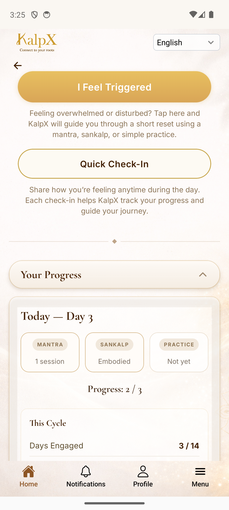
02_free_mantra_chanting_20260410_152528.png
TRIGGER · Practice support
WEB MOBILE · 390×844
RUN.SP.02.png
RN · emulator 1080×2400
RN capture missing
TRIGGER · Mantra (post-practice)
WEB MOBILE · 390×844
RUN.SUP.P.01.png
RN · emulator 1080×2400
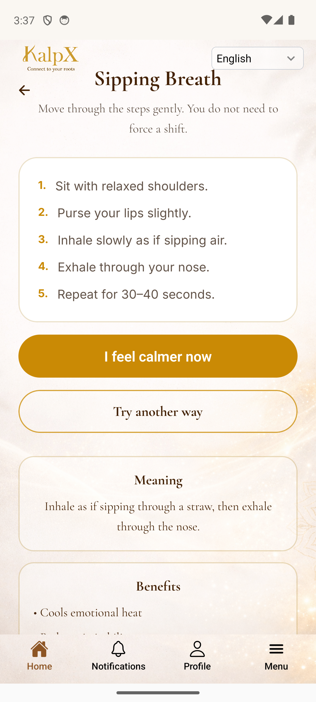
04_post_trigger_mantra_20260410_153706.png
TRIGGER · Back to dashboard (resolved)
WEB MOBILE · 390×844
RUN.SUP.01.png
RN · emulator 1080×2400
RN capture missing